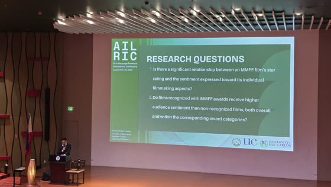
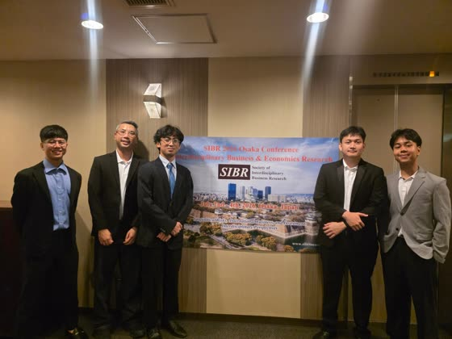
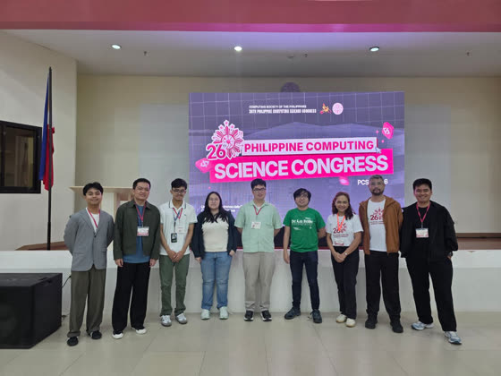
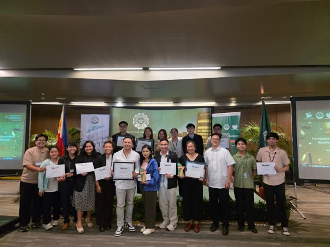

About
I'm an Information Technology student at De La Salle University Manila with a minor in Data Science. Since December 2025 I've worked as an assistant researcher at the Center for ICT for Development, where I run literature reviews, scrape and analyze data, and build the systems behind our NLP, computer vision, machine learning and social media studies.
This year I presented four papers at four conferences, including SIBR in Osaka and AILRIC in Cebu. They cover sentiment in Metro Manila Film Festival reviews, review bombing of Filipino films, an expertise penalty in health influencer engagement, and a phone-based tool that checks lifting form for student athletes. The last one won Best Panel Presentation at DITECH 2026.
I also build full-stack and network projects. My capstone, Sejour, is a web and mobile platform for managing Lasallian pilgrimages, and I hold a CCNA.
Research
-
Aug 2026
AILRIC 2026, Cebu
Aspect-Based Sentiment Analysis of Online Movie Reviews of Metro Manila Film Festival Films

-
Jul 2026
SIBR 2026, Osaka
Text Mining Source Credibility: The Expertise Penalty of Health Influencer Engagement

-
2026
PCSC 2026
Text Mining Analysis of Review Bombing Incidents in Filipino Films

-
2026
DITECH 2026
Mitigating Strength Training Injuries in Student Athletes: An Automated Form Assessment Tool via Mobile Computer Vision

Experience
-
Dec 2025 to present
Assistant Researcher, Center for ICT for Development
Co-authored four research papers and represented the lab at internal and external events. Day to day I run literature reviews, scrape and analyze data, and develop systems for NLP, computer vision, machine learning and social media studies.
-
Sep 2023 to present
BS Information Technology, minor in Data Science, De La Salle University Manila
Current CGPA 3.458.
Projects
-
Present
Sejour (capstone)
A connected web and mobile platform for managing and coordinating Lasallian pilgrimages. It includes real-time participant tracking, document submissions and role-based admin workflows, and it has 60+ users.
-
Apr 2026
ERP Automation and Business Workflow Systems
Simulated enterprise workflows in Odoo covering supply chain demand planning, financial accounting and project management notifications. I automated low-hour alerts, multi-tier invoice approvals and demand forecasting transactions.
-
Jul 2025
Enterprise Multi-Campus Network Simulation
A three-site enterprise WAN across Manila, Laguna and BGC, built with GRE tunnels, VLSM subnetting and dynamic routing, with HSRP and EtherChannel for redundancy. Security covers extended ACLs, VLAN segmentation, PAT, DHCP Snooping, Dynamic ARP Inspection, port security and TACACS+/SSH.
Skills
- Programming languages
- Python, JavaScript, Java, C, PHP, Dart
- Frameworks and libraries
- React, Vue, Svelte, Node.js, Flutter
- DevOps
- AWS, Cisco, Linux (Ubuntu)
- Databases
- MySQL, MongoDB, Firebase
- Networking
- Cisco Packet Tracer, router and switch configuration
- Certifications
- CCNA: Enterprise Networking, Security, and Automation; Lean Six Sigma White Belt
- Spoken languages
- English and Filipino (native)